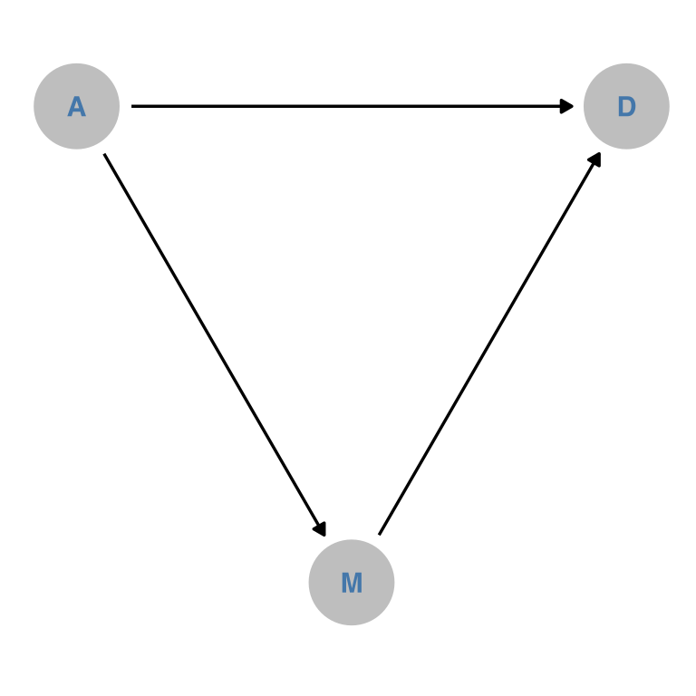
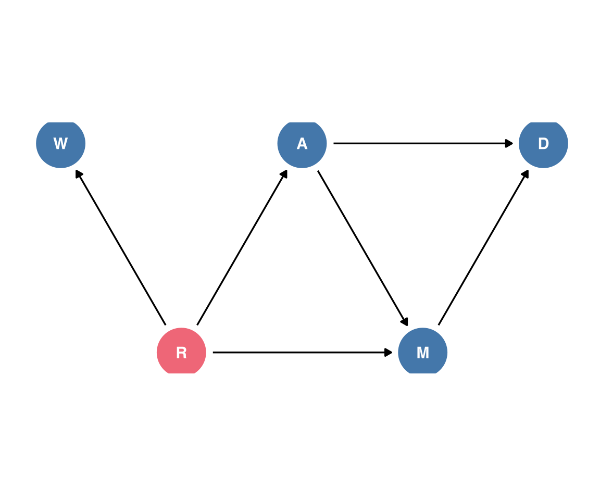

So, as a linguist, the only Directed Acyclic Graphs I’ve ever worked with are syntax trees. I don’t know if it’s embarrassing that I’ve never really utilized them in my statistical analysis, but I’ll start to now!
I’m not sure why everyone likes assigning the full named data frame to a new variable called d. It’s annoying to type out W a f f l e D i v o r c e , but aren’t we all using IDEs with tab completion?
Let’s look at the variables discussed in the chapter.
Not quite happy with this first attempt. Looks like I’ll really have to use these single character labels, which I’m not the biggest fan of, to make them fit inside the nodes. Looks like I might also need to do more by-hand adjustment of both the coordinates of each node, and also the aesthetics of the plot.
dagify( D ~ A, D ~ M, M ~ A,outcome ="D",exposure ="A",coords =tribble(~name, ~x, ~y,"D", 0, 0,"A", -1, 0,## UGH"M", -0.5, -sqrt(1-(0.5^2)) )) -> dam_dagdam_dag |>tidy_dagitty() |>ggplot(aes(x =x, y = y, xend = xend, yend = yend)) +geom_dag_point(color ="grey" )+geom_dag_text(color = ptol_blue )+geom_dag_edges()+theme_dag()+coord_fixed()

Figure 3: DAG attempt 2
Well, I’m a little annoyed at how manual getting the layout to be exactly like I wanted was, but OK.
Adding in Waffle Houses
Let’s figure out how to get the number of Waffle Houses into the DAG. I’ll say there’s a latent variable R for Region
dagify( D ~ A, D ~ M, M ~ A, W ~ R, A ~ R, M ~ R,outcome ="D",exposure =c("M", "A"),latent ="R",coords =tribble(~name, ~x, ~y,"D", 0, 0,"A", -1, 0,## UGH"M", -0.5, -sqrt(1-(0.5^2)),"R", -1.5, -sqrt(1-(0.5^2)),"W", -2, 0 )) -> wrdam_dagwrdam_dag |>tidy_dagitty() |>ggplot(aes(x =x, y = y, xend = xend, yend = yend)) +geom_dag_point(aes(color = name =="R" ) )+geom_dag_text(#color = ptol_blue )+geom_dag_edges() +coord_fixed() +theme_dag()+theme(legend.position ="none" )

Ok, well, we’ll see how intense I ever get about making these DAG figures.
Doing the Full Luxury Bayes
First, prepping for modelling by standardizing all of the variables.
So, we need to include median marriage age in the model.
For the “full luxury Bayes” approach, I’ll combine brms formulas to model both the divorce rate and the marriage rate in one go.
waffle_formula <-bf( divorce_z ~ age_z + marriage_z )+bf( marriage_z ~ age_z )+# not 100% sure this is rightset_rescor(F)
Let’s look at the default priors. I’m, trying out some more stuff with {gt} here to get a table I like, but it takes up a lot of space so I’m collapsing it. I also need to figure out what kind of behavior makes sense to me for table captions created by quarto and table titles created by {gt}.
So, a thing that hadn’t really clicked with me until I was teaching from Bodo Winter’s textbook is that if you z-score both the outcome and the predictors in a model, the resulting slopes are Pearson’s r, which is always going to be \(-1 \le \rho \le 1\). Not that we really have to stress it with this particular data and model, efficiencywise, but we can set a prior on these slopes with a relatively narrow scale, and it’ll be pretty reasonable. Here’s a normal(0, 0.5) and a student_t(3, 0, 0.5) for comparison.
Family: MV(gaussian, gaussian)
Links: mu = identity; sigma = identity
mu = identity; sigma = identity
Formula: divorce_z ~ age_z + marriage_z
marriage_z ~ age_z
Data: waffle_to_model (Number of observations: 50)
Draws: 4 chains, each with iter = 2000; warmup = 1000; thin = 1;
total post-warmup draws = 4000
Population-Level Effects:
Estimate Est.Error l-95% CI u-95% CI Rhat Bulk_ESS Tail_ESS
divorcez_Intercept 0.00 0.12 -0.23 0.24 1.00 6550 3104
marriagez_Intercept -0.00 0.10 -0.20 0.20 1.00 6593 2946
divorcez_age_z -0.61 0.17 -0.94 -0.28 1.00 3753 3193
divorcez_marriage_z -0.06 0.16 -0.38 0.24 1.00 3876 3235
marriagez_age_z -0.70 0.10 -0.90 -0.48 1.00 5942 2618
Family Specific Parameters:
Estimate Est.Error l-95% CI u-95% CI Rhat Bulk_ESS Tail_ESS
sigma_divorcez 0.84 0.09 0.69 1.03 1.00 5746 2990
sigma_marriagez 0.72 0.08 0.59 0.89 1.00 6880 2852
Draws were sampled using sample(hmc). For each parameter, Bulk_ESS
and Tail_ESS are effective sample size measures, and Rhat is the potential
scale reduction factor on split chains (at convergence, Rhat = 1).
Marginalizing
So, to “marginalize” over age, to get the direct effect of the marriage rate, I’d like to use the marginaleffects::slopes() function, but I think we’ve got a slight issue.
Because marriage_z is also an outcome variable, it doesn’t want to give me its marginal slopes in the divorce_z outcome model. So much for full luxury bayes! But I can work around with predictions. I think what I want to use is grid_typ="counterfactual" in datagrid().
Ok, this gives us 40,000 values, which is 20,000 for marriage_z == 0 and 20,000 for marriage_z == 1. And given that the original data had 50 rows, that’s back to the 4,000 posterior samples we got from the model.
head(divorce_pred) |> rmarkdown::paged_table()
The draw column has the posterior draw, so what I want to do is pivot wider so there’s a column for marriage_z==0 and marriage_z==1, then subtract one from the other. I had some issues figuring out which columns need to get dropped for that to happen cleanly, but the answer is rowid and, I think, everything from estimate through conf.high
As it turns out, every estimate of marriage_effect was the same within each draw, but this might not’ve been the case for a model with interactions, say.
full_model |>gather_draws(`b_.*`,`sigma_.*`,regex = T )-> all_param_draws
I’ll want to facet the plots by whether we’re looking at draws for the marriage rate outcome or for the divorce rate outcome, so I’ll create some new columns.
One thing that’s maybe less than ideal is that the sigma parameters really aren’t on the same kind of scale here. Maybe they should be in a completely different plot, and put together with patchwork?